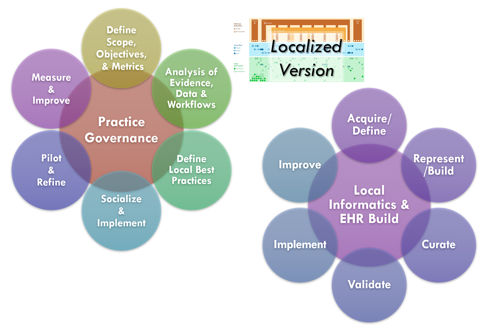
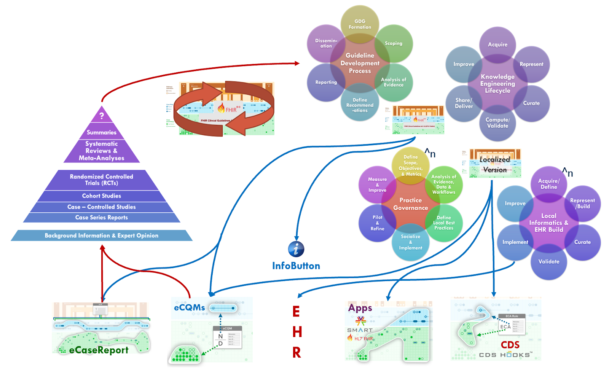

Knowledge implementation refers to the activities of localizing the knowledge formalisms, including addressing data bindings (e.g., data and terminology mappings), workflow insertions and localization factors (e.g., adjustments to thresholds), integration to end-user system endpoint interfaces, and adjustment or issues related to data quality, timing, enrichment, and/or required data enrichments. At minimum, there is a local data, clinical logic, and workflow validation step prior to full implementation.
While local implementations of guideline recommendations may warrant their own implementation guide, this implementation guide addresses several critical factors and considerations related to local implementation. Native EHR build is out of scope.
Local Content and Practice Governance:
First of all, many larger health care delivery organizations have practice governance oversight bodies that may function in some degree like a guideline development group utilizing local organizational experts and key stakeholders, inputs from their own quality functions and research apparatus, and taking into account organizational goals, objectives, and limitations. This practice governance group often takes into account one or more recognized expert body-developed guidelines (as described in the “Guideline Development Process” section), contextualized to a common set of clinical practices and/or common clinical workflows and aligned to organizational goals, issues, and processes.
Local practice governance and quality functions use their own local clinical registries (also called data marts) to analyze their patient population(s) and align their characteristics with guideline recommendations. These local registries or data marts may be used to test hypotheses formulated by the practice governance group, in part using guideline recommendations and their measures with their own experts’ and frontline staff’s input. This may result in varying degrees of adaptations to the guideline recommendations including changes to thresholds or parameters, goals for plans or interventions, workflow insertions, and/or adding or removing recommendations. Many of the various feedback mechanisms in the CPG (e.g., metrics, measures, eCaseReports for registries, etc.) may be used similarly by the practice governance group.

Local informatics (knowledge engineering) and implementation:
Just as many of the functions and methods of the guideline development group have their local analogues, so does the knowledge engineering and guideline formalization and implementation.
Local implementation of standardize best practices includes workflow and decision support (e.g. order sets, documentation templates or adaptive forms, reminders of various types, summary views and clinical dashboards, data enrichments), quality measurement and monitoring, and data collection for analytics (e.g. local clinical registries or data marts). Native EHR build, clinical information systems, and other local vendor implementations are out of scope for this implementation guide.
However, many of the activities that the informatics team performs quite analogous to the knowledge engineering function including: identifying and or defining local data definitions, terminologies, and their respective sources; helping to elicit and specify clinical business logic; eliciting and specifying critical performance metrics (may be clinical, operational, and/or financial); translating all business logic specifications (into local application build environments or similar vendor capabilities); validating business logic (as implemented in local systems, often considered ‘clinical validation’ as done to check for clinical validity); as well as maintaining and improving the above as needed.
Much of the business logic, as specified, is nearly identical, or otherwise substantially related (could be derived from the standard CPG). This often holds true for the clinical business logic (clinical decision-logic for recommendations), abstract key considerations for workflow insertions (e.g. EHR “chart events”, see CDSHooks). Furthermore, many of the clinical and/or operational performance metrics are analogous or very related to many of the CPGMetrics and CPGMeasures.
Similarly, many of the data definitions and terminologies are the same or very related, and could be significantly informed by those in the standard CPG. This includes primitive (data requirements) and inferred data elements for local clinical registries or data marks are very similar to the CPGCaseFeatures.
Some activities unique to local informatics and implementation includes: capturing, analyzing, and optimizing local clinical workflows; redesigning and integrating new end-user application capabilities together with local clinical workflows and business processes; performing end-user or workflow validation (may be in a simulation environment, limited release- only specified users, or pilot release); issues related to periodic upgrades of vendor software.
Concurrent Development and Implementation:
Given the similarities between and related activities of the CPG development process and the local implementation of standardized best practices, there are considerable opportunities for improving the effectiveness, efficiency, implementability, and overall uptake (and enhancement) guideline recommendations related best practices.
One of the opportunities with the CPG-IG is to move as much work as possible upstream, tightly integrated with the guideline development process to significantly reduce the amount of rework and potential error introduced when this work must be repeated for each and every implementation at each and every local site. Furthermore, with the use of standards for representations, expressions, and other formalizations (including delivery mechanisms), the CPG-IG promotes holds the potential for much reuse, either directly as content or through shared services (e.g., CDS, eCQM aaS, SMART-on-FHIR apps, etc.), as an explicit specification for local build environments, or as starting point for localization of CPG content with the similar re-use across layers of knowledge representations, tiers of functionality, implementation methods, and/or delivery and integration mechanisms.
Analogs and Collaboration across CPG Development and Implementation
As described in the section on Knowledge Implementation, there are numerous analogues between the guideline development group and local practice governance as well as between the CPG knowledge engineering function and local informatics and EHR build functions. Likewise, as the guideline development group and knowledge engineering function collaborate in the CPG development process, so does the local practice governance and informatics/EHR build function in the local knowledge implementation process. The similarities in or complementation of functions and tasks, content and information, expertise and skills, and goals and objectives affords a significant opportunity to collaborate more closely, to share related or derivative assets, and to more effectively, efficiently, and rapidly implement best occurrences and achieve objectives.
Feedback- early, often, actionable:
Furthermore, such a collaboration provides an opportunity to engage and address critical implementation concerns further upstream as well as afford earlier, shorter, and actionable feedback loops into the overall best practice to daily practice endeavor. These feedback loops may be through direct interaction between the various functions, through the use of real-world data early in the CPG development process, and through constrained, limited-scope, and focused full lifecycle iterations.
For instance, as data elements and terminologies start could be defined relatively early in the collaborative CPG development process, they may be assessed or even obtained (e.g de-identified data sets from data marts or local clinical registries). In part, this enables a feasibility assessment on required data elements, and may further provide a real-world data substrate for the knowledge engineering lifecycle process for a CPG.
Real-world Data to Develop CPGs:
Such real-world data can not improve the quality (effectiveness and implementability) of the CPG, it affords the opportunity to greatly accelerate the knowledge engineering process and overall CPG development lifecycle by:
Obviously, having more than one local implementation affords many benefits including:

FIG XX. Knowledge Implementation concurrent with Agile CPG Development has the potential to eliminate much waste, increase time-to-use/utility, create more feedback loops earlier in the process, improve the overall value of the guideline, and close the loop in forming a Learning Health System. Such an approach may be even more critical in the case of a pandemic with a novel contagion with an atypical pathophysiological response where best practices and evidence are unknown or yet to be discovered.
Concurrent development and implementation of CPG’s has significant alignment and synergy with the Agile CPG Development Approach, though it provides further opportunities and capabilities to make the approach even more Agile as described above.
Further details of knowledge implementation are beyond the scope of this document at this time, but have implications partially addressed in the section on “Methods of Implementation.”
{% include container-end.html %} {% include footer.html %}